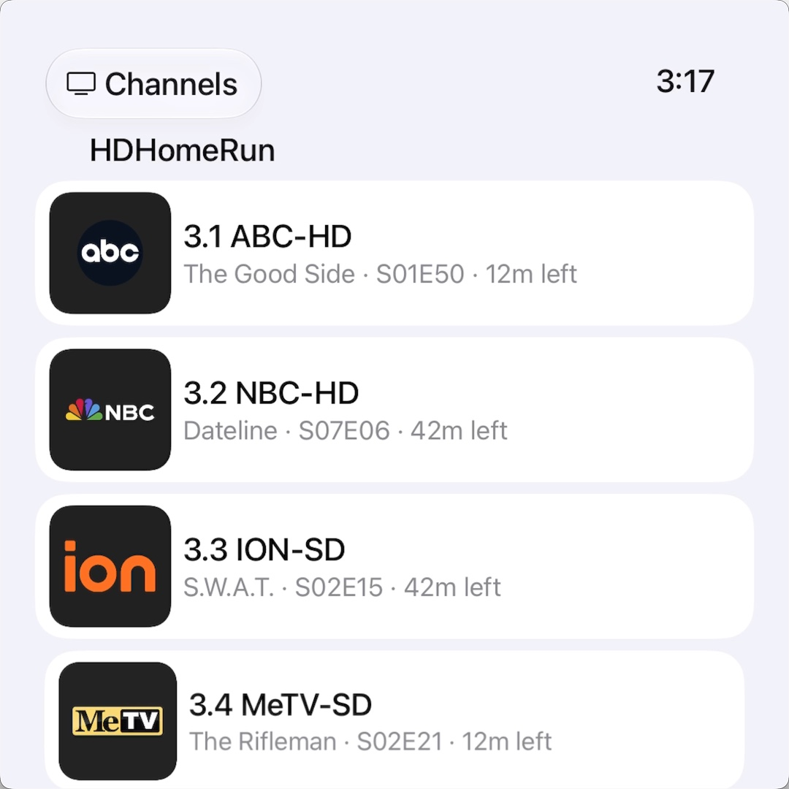
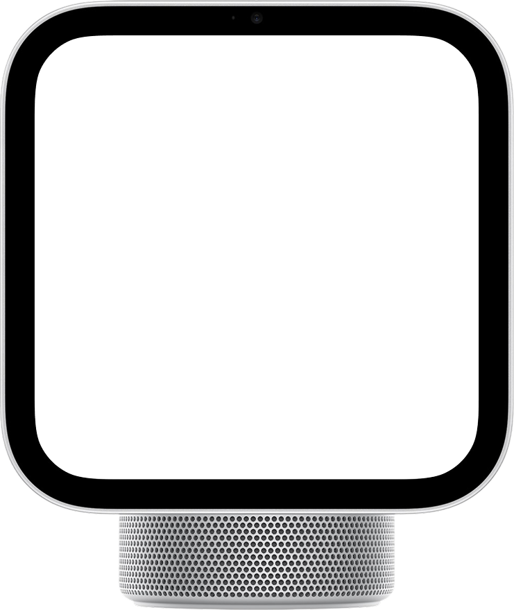

HDHomeRun
Free over-the-air channels from your antenna, or cable, through an HDHomeRun tuner on your Wi‑Fi. Found automatically, with what's on now.
silicondust.com ↗Live channels and your own movies and shows, on HomeView and iPhone.
Get it on the App Store

TV Jr. doesn't come with channels. It plays the TV you already have at home.
Free over-the-air channels from your antenna, or cable, through an HDHomeRun tuner on your Wi‑Fi. Found automatically, with what's on now.
silicondust.com ↗Your movies and shows from your own Jellyfin server, with Continue Watching and Recently Added. Pick up right where you left off.
jellyfin.org ↗Turn your own media into live channels, complete with a guide. Free and open source, running on a computer at home.
ersatztv.org ↗Plus playlists and stream links. Import an M3U playlist from your provider or media server, or add a single live stream by its link.
Favorites and recent channels up front, every channel by source, and your library one tap away.
Watch full screen, then keep it playing in a mini player while you browse.
The same channels on your phone. Open iPhone Duo to watch on one side and browse on the other.
No accounts, no ads, no tracking. Your channels stay on your devices and in your own iCloud.